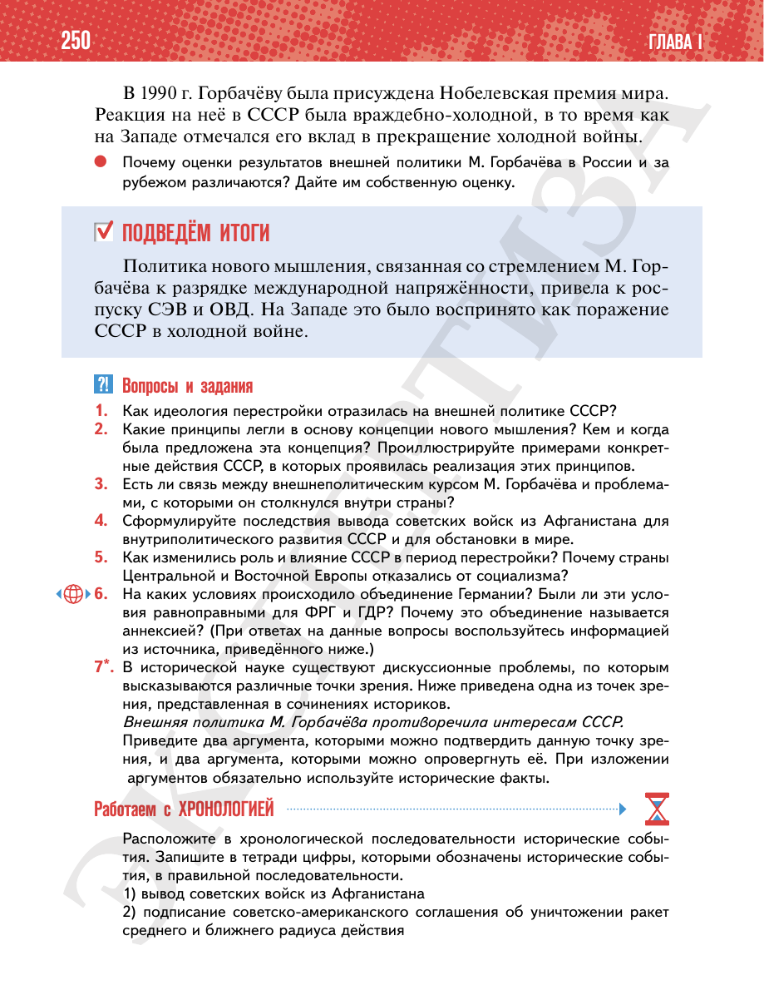

⌂
Мединский.нет
Последнее обновление: 30.08.2026
Мединский.нет
›
История России. 11 класс. Базовый уровень
›
Глава I. СССР в 1945—1991 гг.
›
§ 22. Новое политическое мышление и перемены во внешней политике
›
стр. 250

← стр. 249
Оглавление
стр. 251 →
×